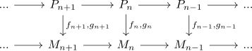
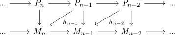
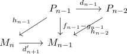
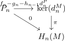
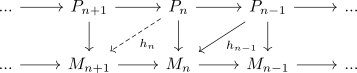
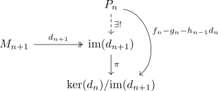
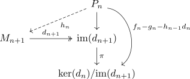
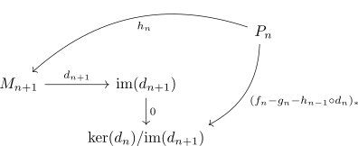

extension of a chain homotopy
Proposition
Let $\mathcal{A}$ be an abelian category and $\mathrm{Ch_*}(\mathcal{A})$ be the category of chain complexes. Suppose $M \in \mathrm{Ch_*}(\mathcal{A})$ is a chain complex and $P \in \mathrm{Ch_*}(\mathcal{A})$ and a chain complex of projectives and $f,g: P \rightarrow M$ chain maps

with $h_{k}: P_k \rightarrow M_{k+1}$ for $k \leq n$

satisfying the chain homotopy equalities

TFAE:
- the map $h': P_n \rightarrow H_n(M)$ for the homology $H_n(M)$ induced by

is the zero morphism
- there exists a morphism $h_{n}: P_{n} \rightarrow M_{n}$ satisfying the chain homotpy equalities

Proof
welldefined
it remains to show, that
Applying $d_{n}^M$ gives
thus it follows, that
showing that $s_n - g_n - h_{n-1} d_n^P \rightarrow \mathrm{ker}(d_n^M)$ is welldefined.
1) $\implies$ 2)
applying the universal property of the image for $\mathrm{ker}(d_n)/ \mathrm{im}(d_{n+1})$ gives

Using projectivity of $P_n$ results in

where
2) $\implies$ 1)
By assumption,
hence it follows, that following diagram commutes

or that the induced map